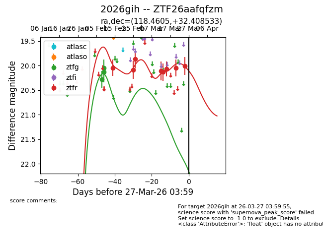
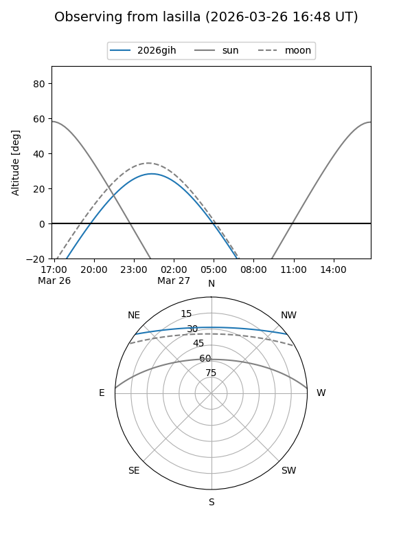
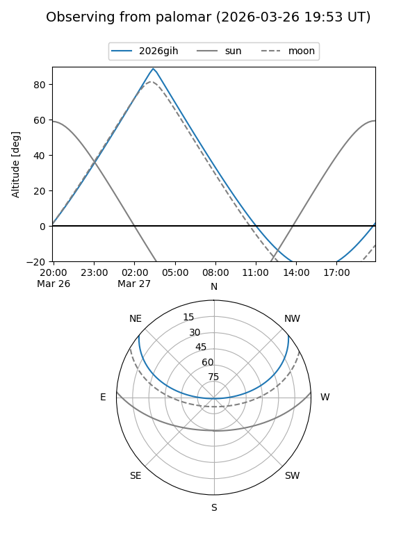
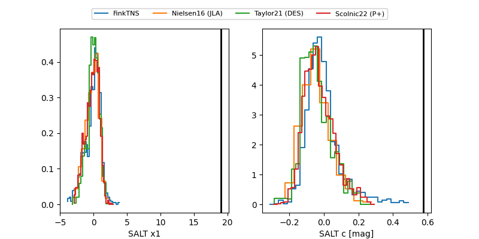

2026gih
Target 2026gih at 2026-03-27 04:02
Aliases and brokers:
FINK: link
Lasair: link
ALeRCE: link
TNS: link
YSE: link
alt names
ZTF26aafqfzm (ztf,fink_ztf)
2026gih (tns,yse)
Coordinates:
equatorial (ra, dec) = 118.4605,+32.40853
equatorial (HMS+DMS) = 07:53:50.53,+32:24:30.72
galactic (l, b) = (188.2636,+26.51664)
Flags:
Photometry:
last ztfg=20.13, ztfr=20.00
3 ztfg, 8 ztfr detections
Lightcurve

Visibility


Additional plots
